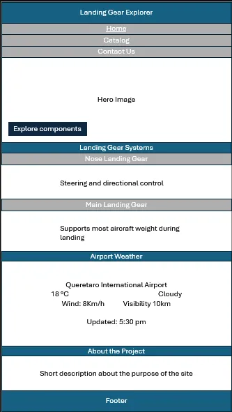
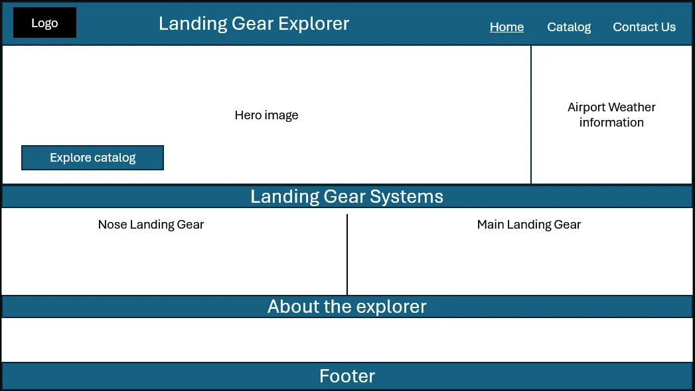

Landing Gear Component Explorer
Site Purpose
The Landing Gear Component Explorer is an interactive website that provides educational and technical information about aircraft landing gear components. Users will be able to explore components, search and filter the catalog, and view information such as the component's function, aircraft application, landing gear system, and manufacturer. The website is designed to provide an accessible introduction to landing gear components for aviation students, engineers, and aviation enthusiasts.
Optional domain availability: landinggear-explorer.com
Scenarios
- What is the function of a specific aircraft landing gear component?
- Which aircraft or landing gear system uses this component?
- What manufacturer produces this landing gear component?
- How can I explore different landing gear components and compare their functions?
Color Schema
| Color | Hex | Use |
|---|---|---|
| Navy Blue | #1F3B5C | Headers, Navigation, Buttons |
| Light Gray | #E8ECEF | Background |
| White | #FFFFFF | Cards |
| Accent Blue | #3A86FF | Links, Hover Effects |
Typography
Montserrat will be used for headings, navigation elements, and buttons because its bold and modern appearance fits the technical and aerospace theme of the website. Roboto will be used for body text and descriptions because it provides good readability across different screen sizes.
Wireframes
Mobile View

Desktop View
